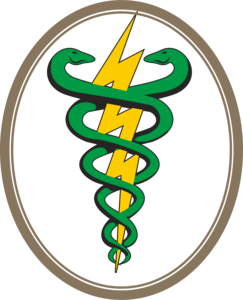

Bem-vindo a FisioDoctor - sua jornada para uma vida mais saudável e ativa começa aqui! Somos uma clínica de fisioterapia dedicada a proporcionar cuidados excepcionais para o seu bem-estar físico e emocional. Com uma equipe de fisioterapeutas altamente qualificados e experientes, estamos comprometidos em ajudá-lo a superar dores, lesões e limitações físicas, permitindo que você retome suas atividades diárias com conforto e confiança. Em nosso site, você encontrará informações detalhadas sobre os diversos serviços que oferecemos, incluindo fisioterapia ortopédica, neurológica, desportiva, pediátrica e geriátrica. Além disso, disponibilizamos tratamentos especializados para recuperação pós-cirúrgica, reabilitação de lesões esportivas e gerenciamento da dor crônica. Nossa abordagem personalizada e baseada em evidências garante que cada paciente receba atenção individualizada, adaptada às suas necessidades específicas. Acreditamos que a educação é fundamental para a sua recuperação, e nosso site oferece artigos e recursos úteis para ajudá-lo a entender melhor seu corpo e o processo de tratamento. Estamos ansiosos para fazer parte da sua jornada rumo à recuperação e ao bem-estar. Agende uma consulta hoje mesmo e permita-nos ajudá-lo a alcançar seus objetivos de saúde e qualidade de vida. Confie na FisioDoctor - cuidando de você, da sua saúde e do seu futuro.
